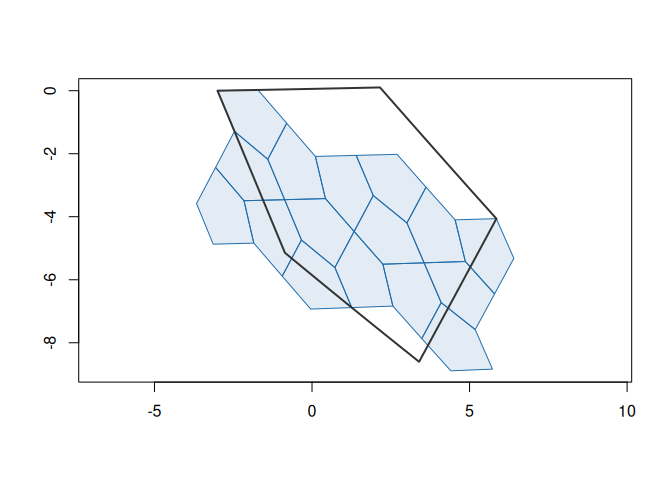
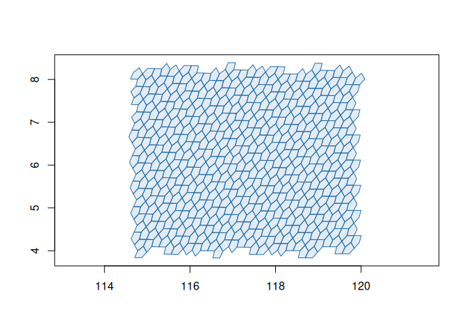

a5R provides R bindings for the A5 pentagonal discrete global grid system (DGGS), powered by the a5 Rust crate via extendr.
a5 partitions the Earth’s surface into pentagonal cells across 31 resolution levels. Cells are equal-area, encoded as 64-bit integers, and achieve millimetre-level precision at the finest resolution. For a full description of the system, see the A5 project page and the reference implementation by Felix Palmer.
R-specific design
-
vctrs: Cell indices are represented as an
a5_cellvector type built on vctrs, giving you type safety, column support in tibbles, and natural coercion to/from character. -
wk: Boundary geometries and cell centroids are returned as wk geometry vectors (
wk_wktandxy), so they integrate directly with sf, terra, and other spatial tooling.
Installation
You can install the development version of a5R from GitHub with:
# install.packages("pak")
pak::pak("belian-earth/a5R")You will need a working Rust toolchain (cargo and rustc).
Examples
Index a point to a cell at resolution 5:
cell <- a5_lonlat_to_cell(-3.19, 55.95, resolution = 5)
cell
#> <a5_cell[1]>
#> [1] 633e000000000000Convert back to coordinates:
a5_cell_to_lonlat(cell)
#> <wk_xy[1] with CRS=OGC:CRS84>
#> [1] (-3.280745 56.43135)Get the cell boundary polygon:
a5_cell_to_boundary(cell)
#> <wk_wkb[1] with CRS=OGC:CRS84>
#> [1] <POLYGON ((-4.490769 56.63193, -4.575103 55.93184, -4.654266 55.23196, -3.592316 55.41531, -2.521971 55.5901, -2.031558 56.23106...>Navigate the hierarchy:
a5_cell_to_parent(cell)
#> <a5_cell[1]>
#> [1] 6338000000000000
a5_cell_to_children(cell)
#> <a5_cell[4]>
#> [1] 633c800000000000 633d800000000000 633e800000000000 633f800000000000Cell info:
a5_get_resolution(cell)
#> [1] 5
a5_cell_area(0:5)
#> Units: [m^2]
#> [1] 4.250547e+13 8.501094e+12 2.125273e+12 5.313184e+11 1.328296e+11
#> [6] 3.320740e+10Visualising the grid hierarchy
# A cell and its children two levels down
parent <- a5_lonlat_to_cell(0, 0, resolution = 3)
children <- a5_cell_to_children(parent, resolution = 5)
# wk geometries plot directly with base graphics
plot(a5_cell_to_boundary(children), col = "#206ead20", border = "#206ead", asp = 1)
plot(a5_cell_to_boundary(parent), border = "#333333", lwd = 2, add = TRUE)
Grid generation
Generate all cells covering an area with a5_grid():
cells <- a5_grid(c(114.8, 4.1, 119.8, 8.1), resolution = 8)
plot(a5_cell_to_boundary(cells), col = "#206ead20", border = "#206ead", asp = 1)
Any geometry that wk can handle works as input, including sf objects and WKT strings. Bounding boxes that cross the antimeridian are supported too:
Performance
a5R provides a performant interface to the A5 indexing system, with all core operations implemented in Rust and called directly from R via extendr. Cross-language benchmarks and consistency checks against the Python, JavaScript, and DuckDB A5 implementations confirm that results are identical across all APIs.
Acknowledgements
A5 was created by Felix Palmer. This package is a thin R wrapper around his work and would not exist without it. The Query-farm team maintain the DuckDB A5 extension, which wraps the same Rust crate and provided a valuable reference for this project.